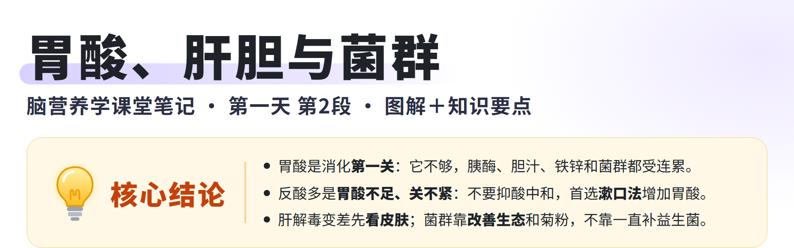
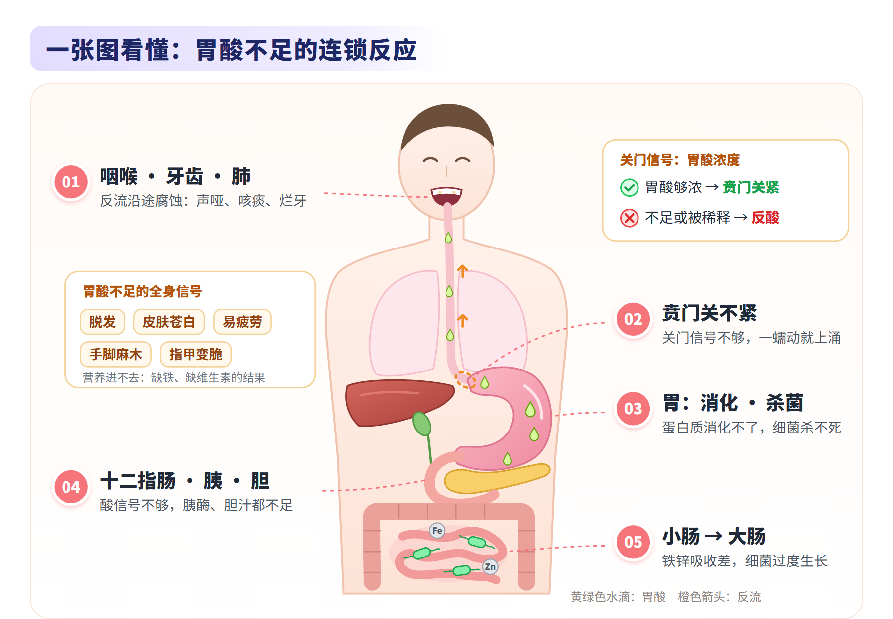
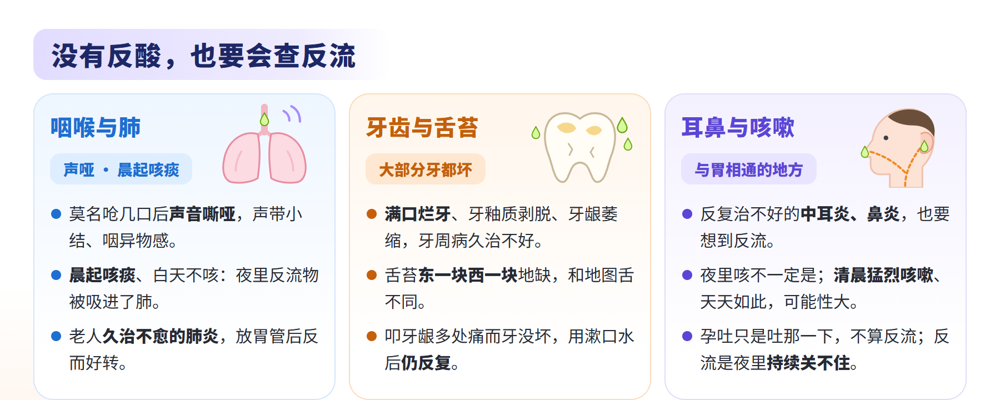
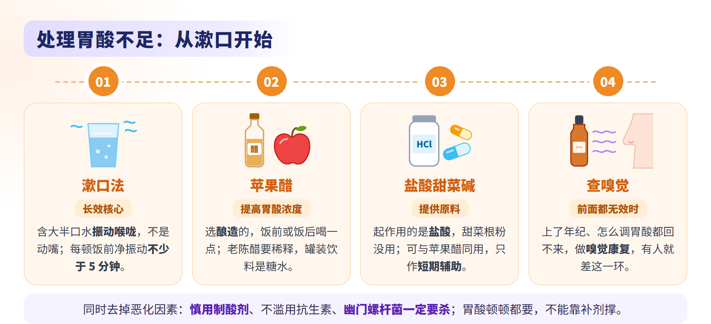
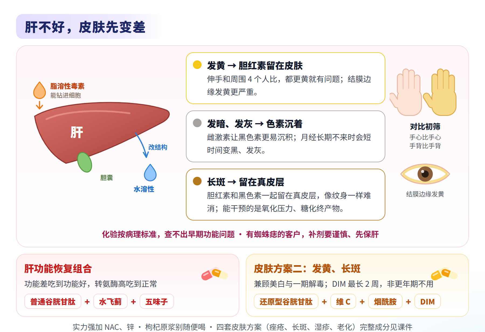
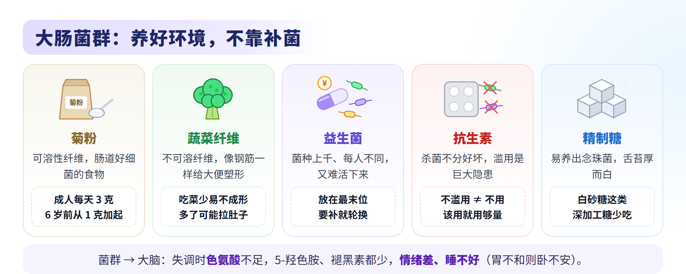
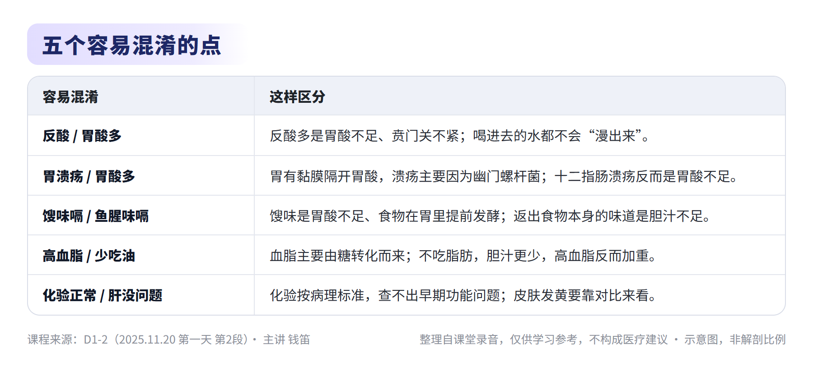
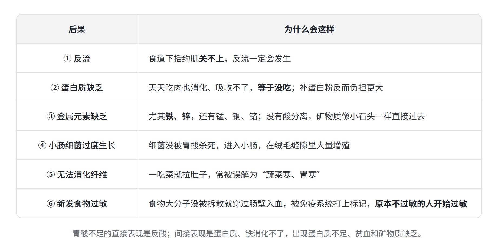
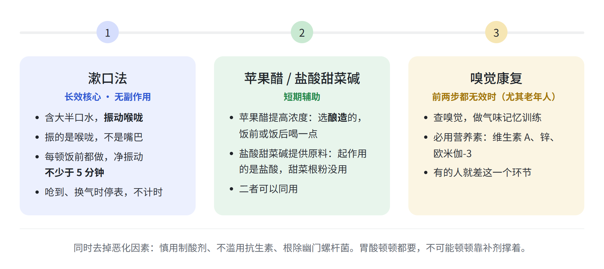
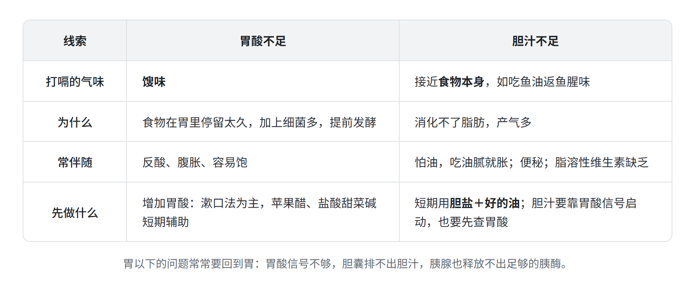

脑营养学 · 第一天 第2段
主题：胃酸与反流、胰腺与胆汁、肝脏与皮肤、肠道菌群
主讲：钱笛 ｜ 日期：2025 年 11 月 20 日（周四） ｜ 时长：3 小时
本纪要整理自课堂录音，仅供学习参考，不构成医疗建议。







总结
本段是第一天的第二段课。老师先给嗅觉收尾，然后跟着食物进入胃：讲胃酸的作用和反酸的真正机制，没有反酸的反流怎么查，胃酸不足怎么处理，再顺着消化道讲到胰腺与胆汁、肝脏与皮肤，最后讲大肠菌群。内容如下：
- 胃酸：消化的第一关
- 胃酸不只是消化
- 消化与杀菌：胃里以化学消化为主，胃酸把蛋白质拆成氨基酸，并杀灭随食物进来的细菌；胃酸不足时，吃再多肉、补蛋白粉都补不上蛋白，蛋白粉反而加重负担。
- 传递信号：胃里的蛋白酶要在胃酸信号下才激活；胃酸流到十二指肠，又通知胰腺和胆囊开始工作。
- 释放铁锌：肉、肝、血制品里的铁要靠胃酸分离、再转化才能用，胃酸不足的人一定缺铁、缺锌。
- 只见过胃酸少：老师从没遇到过胃酸多的人，出问题一定是胃酸过少。
- 反酸是“关不紧”，不是“漫出来”
- 关门信号：食物进胃后，上口（贲门，即食道下括约肌）要关闭；除了胃被撑开，最关键的信号是胃酸浓度。
- 反酸机制：胃酸不足，又被水和食物稀释，信号不够，上口关不紧，胃一蠕动内容物就上涌，这就是反酸。
- 抑酸的误区：用奥美拉唑等制酸剂、再加小苏打中和，胃酸更少、照样关不上，越治越重。遇到反酸要增加胃酸，比如喝醋；柠檬的酸度不够，最终还是碱性食物。
- 两个恶化因素：滥用制酸剂（医生大量开、自己习惯买，“各背一半锅”）和滥用抗生素。
- 后果、症状与溃疡
- 六大后果：反流、蛋白质缺乏、铁锌等金属元素缺乏、小肠细菌过度生长、无法消化纤维（一吃菜就拉肚子）、新发食物过敏。
- 腹部症状：反酸一定有，还有胃痛、烧心、腹胀、容易饱；便秘是间接影响，与胆囊有关。
- 全身信号：脱发、皮肤苍白没血色、容易疲劳、手脚麻木、指甲变脆，都是胃酸不足导致营养不良的结果。
- 两种打嗝：嗝是馊味，提示胃酸不足、食物在胃里停留太久提前发酵；嗝的气味接近食物本身（如吃鱼油返鱼腥味），提示胆汁不足、消化不了脂肪。
- 溃疡的成因：胃有一层黏膜把胃酸和胃壁隔开，胃酸多不会造成溃疡；“无酸无溃疡”早已更新为“无菌无溃疡”，是幽门螺杆菌溶解黏膜留下坑，胃酸才腐蚀胃壁。它还是癌变的重要诱因，发现就要杀，分餐比较好。
- 溃疡怎么查：胃溃疡先查是不是幽门螺杆菌，不是的话看是否喝酒；喝酒、应激、药物也会造成溃疡。医院按规范会开三联或四联；老师个人的看法是杀菌加铋剂护黏膜即可，制酸剂不是必需。课上没有给出具体药名和剂量，用药按医嘱。
- 胃酸不只是消化

- 没有反酸，也可能在反流
- 沿途腐蚀的线索
- 为什么要会查：有人胃酸不足却不反酸、不烧心，老师曾靠“牙齿太烂”筛出一例。胃酸是盐酸，一离开胃就沿途腐蚀食道、喉咙和嘴巴。
- 咽喉：莫名呛几口后声音嘶哑、声带小结、咽异物感、喉咙经常发炎。
- 肺：每天早上咳痰、白天不咳，是夜里反流物被少量吸进了肺；老人久治不愈的肺炎、年轻人动不动就肺部感染，也要想到反流。
- 牙齿：大部分牙都坏、牙釉质大面积剥脱、不明原因牙龈萎缩、牙周病久治不愈；关键是“大部分牙”，不是一两颗。
- 耳和鼻：反复治不好的中耳炎、鼻炎。记法：凡与胃相通的部位（肺、咽喉、鼻腔、耳朵、嘴巴）反复出问题，都要想到反流。
- 咳嗽与口腔查体
- 咳嗽怎么分：夜间咳嗽加重是常态；清晨交感被唤醒时仍有一阵猛烈咳嗽、每天如此，反流的可能性很大，很多小孩有反流却没有症状。孕吐不算反流。
- 舌苔：突然东一块西一块地缺舌苔，多见于住院、长期卧床的老人和中风患者，是被胃酸损坏；地图舌是一块一块地缺，有的是生理性变异。
- 牙周叩击：用手腕力量轻叩牙龈边，多个痛点而牙没坏，要怀疑牙周已开始发炎；课堂演示中痛点全在上牙，与夜间仰卧位反流有关。用一段时间漱口水仍反复出现，提示反流。
- 年龄分工：从小反流的年轻人一定满口烂牙，直接看牙齿；叩击多在中年以后才叩得出问题。
- 长期反流的后果
- 巴雷特食管：长期反流，食道的鳞状上皮会化生成更像胃的柱状上皮，免疫系统攻击这些细胞，被归为癌前病变。
- 食管狭窄：喝酒呕吐的人，食道下括约肌反复溃疡又愈合，形成瘢痕，既张不开又收不紧。
- 反流的成因：取决于上口扎不扎紧；年龄是一个因素，重点要注意幽门螺杆菌，反酸后再吃制酸剂会进一步恶化。
- 沿途腐蚀的线索
- 处理胃酸不足
- 四条原则
- 刺激迷走神经：胃酸分泌由迷走神经驱动，漱口法最重要。
- 慎用抑制胃酸的药：老师说这已是第三次强调；不是让大家和消化内科医生作对，而是自己不要一反酸就去药店买奥美拉唑。
- 杀幽门螺杆菌：一定要杀，不杀可能出现溃疡。
- 补酸只是短期辅助：胃酸每天每顿都要，是最不值得靠补剂撑的东西。
- 三个层次
- 漱口法：含大半口水振动喉咙（不是动嘴巴），振动喉咙能逼着脑干放电、让迷走神经放电。每顿饭前做，想稳定见效，净振动时间不少于 5 分钟，用秒表计时，呛到、换气、换水都不算。
- 漱口法为什么最强：长效、没有副作用，把整个消化链路一次叫起来；要不要漱一辈子，取决于大脑（脑干）是否康复。
- 苹果醋：pH 约 2.3～2.5，能提高胃酸浓度，饭前或饭后喝一点；必须是酿造的，罐装苹果醋饮料是“苹果醋味的糖水”；老陈醋也可以，但要稀释，否则伤食管和牙齿。
- 盐酸甜菜碱：为胃酸提供原料，起作用的是盐酸部分，所以吃甜菜根粉没用；可以和苹果醋一起用，剂量课上未给。
- 嗅觉康复：上了年纪的人，漱口、补甜菜碱都做了胃酸仍回不来，要查嗅觉；康复方案以维生素 A、欧米伽-3、锌为必用，硫辛酸非必需。
- 四条原则

- 胰腺与胆汁
- 胃酸是启动胰胆的信号
- 酸信号：残留胃酸流到十二指肠被感知，胰腺才释放胰酶、胆囊才排出胆汁；胆汁把脂肪乳化成小颗粒，胰液像强碱一样中和剩余胃酸。
- 十二指肠溃疡：不是胃酸多，而是胃酸浓度或量不够，胰液释放不足、中和不了，残酸烧坏十二指肠；处理是先补胃酸。
- 消化酶不足与过敏：消化不充分的蛋白质大分子入血会导致过敏；容易过敏或突然对某类食物过敏，要查消化酶。
- 胆汁不足的三个后果
- 消化不了脂肪：吃鱼油就打嗝，吃油腻就腹胀、打嗝，不吃就好。
- 脂溶性维生素缺乏：维生素 A、E、D 要溶在脂肪里吸收；老年人多种脂溶性维生素都缺，大概率是胆汁不足。
- 便秘：剩余的胆盐到大肠起润滑作用，胆盐不足就可能便秘；老年人、高血脂者、长期怕吃肉的人多见。
- 高血脂的“连环坑”
- 血脂高也要吃脂肪：是“要吃”，不是“吃很多”。
- 第一坑：只少吃油，空缺被碳水补上；血脂主要是糖转化来的内源性脂肪（老师举的比例约占六七成），高血脂反而加重。
- 第二坑：不吃脂肪，胆囊少了脂肪信号就不排泄，胆汁、胆盐更少，高血脂再次恶化。
- 消化酶与胆盐：短期帮一把
- 全谱消化酶＋胆盐：暂时解决消化酶和胆汁不足，最适合老年人和脑发育迟缓的孩子。
- 整片吞：片剂外有保护层，掰碎喂孩子会在嘴里溶解，几天后满口溃疡。
- 胆盐＋好的油：胆汁不足、多种脂溶性维生素都缺的老人一起吃，胆盐帮助消化脂肪，脂肪刺激胆囊收缩。
- 别长期依赖：天天用超过 3 个月要小心，胰腺分泌消化酶的细胞会萎缩；长期方案还是漱口。
- 胃酸是启动胰胆的信号

- 肝脏与皮肤
- 肝：消化里的“劳模”
- 解毒原理：肝不能让有毒变无毒，而是把能穿过细胞膜的脂溶性毒素改成水溶性，再随尿液或大便排出。
- 间接判断：肝还管储存糖原、激素转化和凝血；凝血、性激素调节不好，或进新装修的地方、闻到化学溶剂就难受好几天，可能是肝解毒差。
- 伤肝因素：糖最隐蔽，像抠墙皮一样持续损耗；此外是酒精、药物和成分复杂的草药、职业性毒物暴露。
- 肝不好，皮肤先变差
- 发灰、发黑：女性月经长期不来时，皮肤会短时间变黑、发灰，与雌激素有关，也是肝的调节造成的。
- 发黄：胆红素留在皮肤里；早期远不如黄疸明显，要靠对比：伸出手，手心比手心、手背比手背，跟周围 4 个人比都更黄，就是有问题。结膜边缘出现一圈淡黄，更严重。
- 蜘蛛痣：严重肝病的体征，有核心点、毛细血管向外放射，和一点一点的红痣（血管瘤）不同。客户有蜘蛛痣，用补剂要谨慎，优先保肝，并做好沟通。
- 化验查不出早期问题：转氨酶、胆红素按病理标准判断，早期功能问题查不出来；指标没到病理线却已有症状，说明这个人已经扛不住了。
- 发黄、发暗、长斑与四套皮肤方案
- 三种机制：发黄是胆红素；发暗是雌激素让黑色素更易沉积；胆红素和黑色素一起留在真皮层，就成了像纹身一样难消的斑。能干预的是氧化压力和糖化终产物。
- 四套方案：方案一针对肝功能差又长发红痤疮，方案二针对发黄、长斑、色素沉着，方案三针对过敏、湿疹、特应性皮炎，方案四针对起皱、下垂；完整成分见课件。
- 谷胱甘肽分型：护肝用普通（氧化型）的即可，可与 NAC 任选；方案二要兼顾美白，用还原型。
- 维生素 C 与烟酰胺：维 C 抗氧化偏向皮肤，抽烟的人消耗特别快；单次 300～500 毫克吸收比例较好，嫌麻烦也可以一次多吃。烟酸会让脸潮红，给客户换成烟酰胺。
- DIM：雌激素受体拮抗剂，用不超过 1 周，最长不超过 2 周；非更年期不要用。
- 维生素 D 与辅酶 Q10：方案三的维生素 D 最好不低于 1 万单位，老师认为它可能是最重要的营养素，而维生素 A 容易中毒要小心；方案四的辅酶 Q10 不低于 400 毫克，不必区分还原型、氧化型。
- 肝功能恢复组合
- 三件套：普通谷胱甘肽（助一期解毒，可长期吃）＋水飞蓟（促肝细胞再生）＋五味子（预防肝纤维化，打成粉用，用量见课件）；五味子是老师认为唯一对肝有正向作用的草药。
- 疗程与判断：功能差的吃到功能好，转氨酶升高的吃到恢复正常即可停；没有转氨酶问题的人，看皮肤是否不再发黄。
- 加强与提醒：实力强加 NAC，锌便宜可加；枸杞原浆别随便喝，近两年有肝损伤的报道。
- 肝：消化里的“劳模”
- 大肠与肠道菌群
- 菌群怎么影响大脑
- 神经营养的来源：很多神经递质、神经营养因子或其前体依赖肠道细菌；短链脂肪酸是神经细胞的食物，靠细菌发酵可溶性纤维产生。
- 胃不和则卧不安：菌群失调 → 色氨酸不足 → 5-羟色胺和褪黑素都不足 → 情绪差、睡眠差。
- 发炎会传到大脑：大肠持续发炎，大脑也容易发炎，这是最糟糕的影响。
- 看大便：布里斯托分类
- 第 4 型：香蕉样，最标准。
- 第 1～3 型：越来越干，多是好细菌太少、发酵不充分，或肠蠕动太慢、水分被反复吸收。
- 第 5 型：临界不成形，多是不可溶纤维不够（吃菜少）；长期饮酒者和有过脑发育迟缓的人常见。
- 第 6～7 型：越来越稀，提示发炎；第 7 型水样便毫无疑问是发炎，有的是感染。
- 养生态，不靠补菌
- 益生菌不经济：大肠里有数千种细菌、每人比例不同，能买到的只有几个大属类；唾液、胃酸、原生菌层层消耗，能定植的不多。不是没效，是不经济，所以放在最末位。
- 要补就轮换：一直补一种既浪费钱又很快没效果，要么轮换，要么一次补多个菌种。
- 鱼缸比喻：只照顾一个环节，鱼缸水必臭、鱼必死；要让整个环境适合细菌生长，让它们自己活下来。
- 抗生素：不滥用不等于不用；滥用是三天两头吃、哪里不舒服都吃一两颗、又不用够量。
- 两种纤维：不可溶纤维像钢筋一样给大便塑形，需求量少，多了可能拉肚子；可溶性纤维才是细菌的食物。
- 菊粉：最便宜的补剂。成人每天 3 克；6 岁前的孩子从 1 克开始，屁和肠鸣不变多、大便不变差，再加到 2 克、3 克。吃后胀气、屁多提示小肠细菌过度生长，拉肚子提示原有菌群失调。菊粉极易受潮，别一次买太多。
- 少吃精制糖：白砂糖这类深加工糖容易养出念珠菌，表现为舌苔特别厚、特别白，小孩和长期生病的老人多见。
- 小肠细菌过度生长（本段结尾）：大肠细菌跑到小肠增殖，先抢营养、边抢边发酵，造成营养不良、胀气和丙酸等代谢物中毒；比较好用的判断方法是直接用菊粉试。
- 菌群怎么影响大脑
章节速览
时间为本段录音内的时间点。
00:02嗅觉收尾：测试判读与康复营养素
讲嗅觉的重点是康复嗅觉来解决消化问题：上了年纪、怎么调胃酸都回不来的人要查嗅觉。测试时熟悉的气味都能认出就换陌生气味，名称记反直接纠正；康复方案以维生素 A、欧米伽-3、锌为必用，硫辛酸非必需。
08:02胃酸的作用：消化、杀菌、信号与铁锌
胃里以化学消化为主，胃酸把蛋白质拆成氨基酸并杀菌；胃酸不足，吃再多肉、补蛋白粉都没用。胃酸还是信号，激活胃蛋白酶并通知胰腺、胆囊；铁锌也要靠胃酸分离，胃酸不足的人一定缺铁、缺锌。
13:10胃的“关门”：反酸是胃酸不足
食物进胃后上口要关闭，最关键的信号是胃酸浓度；胃酸不足又被稀释，食道下括约肌关不紧，一蠕动内容物就上涌。把反酸当成胃酸多到漫出来，开制酸剂、加小苏打中和，只会越治越重；遇到反酸要增加胃酸，比如喝醋。
22:19胃酸不足的六大后果
反流一定会发生，蛋白质和铁、锌、锰、铜、铬等金属元素都会缺乏。细菌没被杀死会在小肠过度生长；消化不了纤维，一吃菜就拉肚子；没拆散的大分子入血，还会让人新发食物过敏。
26:00溃疡的真正成因：幽门螺杆菌
胃有一层黏膜把胃酸和胃壁隔开，就算把盐酸喝进去也不会溃疡。幽门螺杆菌溶解黏膜留下坑，胃酸才腐蚀胃壁；它还是癌变的重要诱因，发现就要杀，分餐比较好。
30:52胃酸不足的症状与全身信号
反酸一定有，还有胃痛、烧心、腹胀、容易饱，便秘与胆囊有关。全身表现是脱发、皮肤苍白、易疲劳、手脚麻木、指甲变脆；胃溃疡先查幽门螺杆菌，再看是否喝酒。
35:42两种打嗝与让胃酸不足恶化的原因
馊味嗝说明胃酸不足、食物在胃里停留太久提前发酵；嗝的气味接近食物本身（如吃鱼油返鱼腥味），是胆汁不足、消化不了脂肪。让胃酸不足恶化的，一是滥用制酸剂，二是滥用抗生素。
38:55没有反酸的反流：咽喉与肺
有人胃酸不足却不反酸、不烧心，老师曾靠“牙齿太烂”筛出一例。反流的盐酸沿途腐蚀：莫名呛后声音嘶哑、声带小结、咽异物感；每天早上咳痰而白天不咳，是夜里反流物被吸进了肺。
44:20久治不愈的肺炎、满口烂牙与中耳炎
老人久治不愈的肺炎、不明原因的咳嗽，放胃管后好转，也是反流所致。大部分牙都坏、牙釉质剥脱、牙龈萎缩，以及反复治不好的中耳炎、鼻炎都要考虑反流；记法是凡与胃相通的部位反复出问题，就想到它。
48:18咳嗽鉴别与长期反流的后果
孕吐不算反流；夜间咳嗽加重是常态，清晨猛烈咳嗽、每天如此才高度怀疑反流。长期反流会让食道上皮化生得像胃，即巴雷特食管，被归为癌前病变；喝酒呕吐的人还可能形成瘢痕、食管狭窄。
55:27首先解决胃酸；反流的成因
任何营养问题只要出现反酸，首先解决胃酸。反流取决于上口扎不扎紧；年龄是一个因素，重点注意幽门螺杆菌，反酸后再吃制酸剂会进一步恶化，怀孕、食管裂孔疝、肥胖等都不是主要原因。
59:08幽门螺杆菌治疗、应激性溃疡与传统胃药
医院按规范会开三联或四联；老师个人的看法是杀菌加铋剂护黏膜，制酸剂不是必需，课上没有给出具体药名和剂量。非幽门螺杆菌溃疡多因喝酒、应激、药物；陈香露白露这类香料草药主要促进胃排空。
1:04:43胃酸信号启动胰腺和胆囊；十二指肠溃疡
残留胃酸流到十二指肠被感知，胰腺才释放胰酶、胆囊才排出胆汁；胰液像强碱一样中和剩余胃酸。十二指肠溃疡不是胃酸多，而是胃酸不够、胰液不足以中和，处理是先补胃酸。
1:09:52胆汁不足的三个后果
胃酸信号不够，胆囊就排不出胆汁。后果是消化不了脂肪、缺乏脂溶性维生素 A、E、D，以及胆盐不能润滑大肠而便秘，老年人、高血脂者、长期怕吃肉的人多见。
1:11:56高血脂的“连环坑”
血脂高的人也要吃脂肪，是“要吃”不是“吃很多”。只少吃油，空缺被碳水补上，糖转成内源性脂肪；不吃脂肪，胆囊少了脂肪信号更不排泄，胆盐也更少，两次加重高血脂。
1:20:43肝脏：解毒原理与伤肝因素
肝不能让有毒变无毒，而是把脂溶性毒素改成水溶性再排出；消化酶不足、蛋白质大分子入血则会引起过敏。肝解毒能力可从凝血、性激素和对气味是否敏感间接判断；伤肝因素里糖最隐蔽，像抠墙皮一样持续损耗。
1:28:48肝不好的皮肤信号与对比初筛
肝解毒变差，皮肤首当其冲：月经长期不来时发灰发黑，胆红素留在皮肤则发黄。蜘蛛痣是严重肝病体征，客户有它时补剂要谨慎、先保肝；发黄靠伸手和周围 4 个人对比，抽血查转氨酶、胆红素查不出早期功能问题。
1:40:05女性发黄、发暗、长斑的机制
早期肝功能变差的多是女性，最在意的是发黄发暗和长斑。发黄是胆红素，发暗是雌激素让黑色素更易沉积，二者留在真皮层就成了像纹身一样难消的斑；能干预的是氧化压力和糖化终产物。
1:45:22皮肤方案一、二与维生素 C
方案一针对肝功能差又长发红痤疮，用普通谷胱甘肽（或 NAC）、水飞蓟等，约吃一个月；方案二针对发黄、长斑，谷胱甘肽改用还原型，配维生素 C、烟酰胺等，完整成分见课件。维 C 抗氧化偏向皮肤，抽烟的人消耗特别快；烟酸会潮红，给客户换成烟酰胺。
1:54:16皮肤方案三、四与维生素 D
DIM 最长不超过 2 周，非更年期不用。方案三针对过敏、湿疹、特应性皮炎，维生素 D 最好不低于 1 万单位，维生素 A 则容易中毒；方案四针对起皱、下垂，辅酶 Q10 不低于 400 毫克，还原型、氧化型没有差别。
2:03:31大肠菌群与大脑：靠改善生态
很多神经递质、神经营养因子或其前体依赖肠道细菌，短链脂肪酸是神经细胞的食物，大肠发炎大脑也容易发炎。大肠细菌约 1 公斤、数千种，无法靠补充解决，唯一可行的是改善细菌的生长环境。
2:08:14布里斯托大便分类
量表更重要的用途是判断好细菌过少、纤维过少还是发炎。第 4 型香蕉样最标准；第 1～3 型偏干，多是好细菌少或蠕动慢；第 5 型多是不可溶纤维不够；第 6～7 型提示发炎或感染。
2:11:27口腔查反流：牙釉质、舌苔与牙周叩击
补充第 5 型常见于长期饮酒和有过脑发育迟缓的人后，回到反流：牙釉质脱落像满口烂牙，舌苔东一块西一块地缺。叩牙龈多处痛而牙没坏要怀疑牙周发炎，演示中痛点全在上牙；用一段时间漱口水仍反复，提示反流。
2:19:11处理胃酸不足：原则、苹果醋与盐酸甜菜碱
胃酸由迷走神经驱动，原则是刺激迷走神经、慎用抑酸药、杀幽门螺杆菌，苹果醋和盐酸甜菜碱作短期辅助。苹果醋提高浓度，要酿造的，饭前或饭后喝一点；盐酸甜菜碱提供原料，可与苹果醋同用；胃酸是最不值得靠补剂撑的东西。
2:25:03漱口法：振动喉咙激活迷走神经
脑干管消化的区域也管喉咙和下巴肌肉，振动喉咙能逼着脑干、迷走神经放电。含大半口水振动喉咙，每顿饭前净振动不少于 5 分钟，呛到、换气不计时；它长效、无副作用，是最强的方案。
2:29:39全谱消化酶与胆盐
要不要漱一辈子，取决于大脑是否康复。全谱消化酶加胆盐能暂时解决消化酶、胆汁不足，最适合老人和脑发育迟缓的孩子；片剂要整片吞，胆盐与好的油同服，天天用超过 3 个月要小心胰腺细胞萎缩。
2:34:36最强肝功能恢复组合
普通谷胱甘肽助一期解毒、可长期吃，水飞蓟促肝细胞再生，五味子预防肝纤维化，是老师认为唯一对肝有正向作用的草药。功能差吃到功能好，转氨酶高吃到恢复正常；实力强加 NAC，枸杞原浆别随便喝。
2:41:45益生菌不经济，关键是养生态
益生菌菌种难对上、又难活下来，不是没效而是不经济，放在最末位。像养鱼缸一样要让整个环境适合细菌生长：不滥用抗生素但该用就用，并给细菌喂可溶性纤维，不可溶纤维只管给大便塑形。
2:47:42菊粉：用法与反应判读
菊粉是最便宜的补剂，成人每天 3 克，6 岁前从 1 克慢慢加。吃后胀气、屁多提示小肠细菌过度生长，拉肚子提示原有菌群失调；益生菌要补就轮换或多菌种。
2:53:18精制糖、菌群与睡眠情绪；引出 SIBO
精制糖容易养出念珠菌，表现为舌苔特别厚、特别白。菌群失调让色氨酸不足，5-羟色胺、褪黑素都少，情绪差、睡不好；最后引出小肠细菌过度生长，比较好用的判断方法是用菊粉试。
关键内容
本段为讲座，没有需要决策的事项。关键内容如下：
- 胃酸先行：任何营养问题，只要出现反酸，首先解决胃酸，否则后面的改善都谈不上。
- 反酸的真相：反酸多是胃酸不足、贲门关不紧；不要抑酸或中和，要增加胃酸。
- 会查隐性反流：声哑、晨起咳痰、久治不愈的肺炎、满口烂牙、中耳炎鼻炎、舌苔缺损，都要想到反流。
- 处理层次：漱口法是长效核心；苹果醋、盐酸甜菜碱和消化酶、胆盐只作短期辅助；同时慎用制酸剂、根除幽门螺杆菌。
- 胆汁与高血脂：胃酸信号不够，胆汁和胰酶都不足；高血脂也要吃脂肪，只少吃油会掉进“连环坑”。
- 肝与皮肤：肝解毒变差先体现在皮肤上，靠对比手色初筛；化验查不出早期功能问题。
- 菌群：改善生态胜过补益生菌——不滥用抗生素、补菊粉、少吃精制糖。
金句时刻
「很多人以为反酸是胃酸多到反上来、漫出来了，那你喝进去的水，它怎么不会漫出来？」
—— 一句反问拆掉“反酸＝胃酸多”的直觉，引出本段最核心的关门机制。
「胃酸是一个最不值得用补剂的东西，因为你不可能每一顿饭都靠这两个东西撑着。」
—— 说的是苹果醋和盐酸甜菜碱：它们只能短期帮忙，长效还是靠漱口法让胃自己分泌足够的胃酸。
「鱼缸就是一个生态系统，你如果不把它当生态系统来处理，只关照其中一个环节，那水 100% 要臭，或者鱼 100% 要死。」
—— 用养鱼说明菌群该怎么管：改善整个环境，让细菌自己活下来，而不是一直往里补菌。